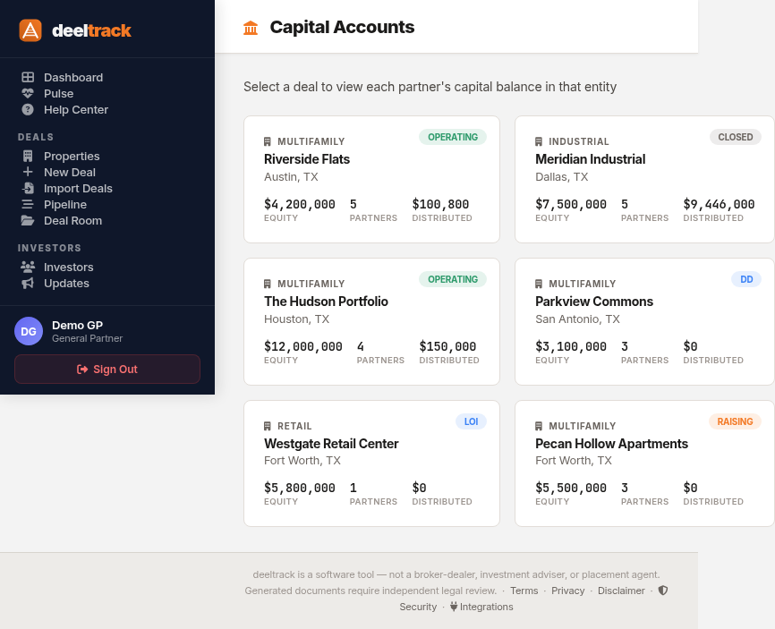

The LP Portal: Self-Service Investor Experience
Every GP knows the cycle: you post a distribution, and within 24 hours your inbox fills up. "When will I receive my wire?" "What was my Q3 return?" "Can you resend my K-1?" "What's my current capital account balance?"
These aren't unreasonable questions. Your investors should have easy access to this information. The problem is that you're the bottleneck — and every email you answer is time you're not spending on deals.
deeltrack's LP Portal gives your investors a branded, self-service dashboard where they can find everything they need without emailing you.
What Your Investors See
When an LP logs into the portal, they get a personalized dashboard tailored to their investments. No GP tools, no admin clutter — just what matters to them.
Why Self-Service Matters
Let's be honest about the economics. If you have 30 investors across 4 deals, and each investor emails you even once a quarter with a basic question, that's 120 emails a year you're handling manually. At 10 minutes per email (find the data, compose the response, double-check the numbers), that's 20 hours a year spent answering questions that a portal handles automatically.
But the time savings isn't even the biggest win. The biggest win is investor confidence.
When your LPs can log in at 11 PM and see exactly where their money is, how much they've received, and when the next distribution is expected — they feel informed. Informed investors are calm investors. Calm investors re-up for your next deal.
Most LPs invest with multiple sponsors. The one who provides the best transparency and communication wins their next allocation — even if returns are comparable. The LP Portal is a competitive advantage, not just a feature.
Capital Account — Real-Time, Always Accurate
The capital account view is the heart of the LP Portal. For each deal an investor participates in, they see:
- Total contributions — every capital call they've funded
- Total distributions received — broken down by period
- Unreturned capital — how much of their original investment is still deployed
- Preferred return accrued — what they're owed vs. what's been paid
- Equity multiple (MOIC) — total value / total invested

GP-side capital account view. LPs see their own data in the same format.This data updates automatically when you post distributions or record capital calls. There's no manual sync step — the portal always reflects the current state of the ledger.
K-1 Vault — Self-Service Tax Season
K-1 season is stressful enough without fielding "Where's my K-1?" emails from every investor. With deeltrack:
- Upload K-1s from your CPA (individually or in bulk)
- deeltrack auto-sorts them by investor and tax year
- Each LP downloads their own K-1 from the portal
- You track delivery status — who's downloaded, who hasn't
No more emailing password-protected PDFs one at a time. No more "I didn't get mine" follow-ups. The K-1 is in their portal. They can access it whenever their CPA needs it.
Distribution History With Context
LPs don't just want to know how much they received — they want to understand the waterfall math. The portal shows each distribution with:
- Date and period (Q1 2026, Annual 2025, etc.)
- Total distribution amount and their personal allocation
- Waterfall tier breakdown (how much was pref vs. residual)
- Payment method and status
This level of transparency builds trust. When an investor can see that their pref was fully satisfied before the GP took promote, they understand the alignment.
Branded Experience
The LP Portal isn't a generic deeltrack page — it's branded with your firm's identity. Your logo, your firm name, your contact information. From the investor's perspective, it's your portal.
This matters because your LP experience is a reflection of your professionalism. A branded, polished portal signals that you take operations seriously — which is exactly what sophisticated LPs look for.
Security
Investor data is sensitive. SSNs, bank accounts, tax documents — this isn't data you want floating in email attachments. The LP Portal provides:
- Firebase Authentication — secure login with email/password
- Role-based access — LPs only see their own data, never other investors'
- KMS encryption — sensitive fields (TIN, banking) encrypted with Cloud KMS
- HTTPS everywhere — all data in transit is encrypted
- No email attachments — K-1s and documents live in the portal, not in inboxes
Getting Investors Set Up
Adding an investor to the portal takes about 30 seconds:
- Add the investor to your CRM with their email
- Link them to the relevant deal(s)
- They receive a signup link and create their account
- Once logged in, they immediately see their portfolio
No onboarding calls. No training sessions. The portal is intuitive enough that investors figure it out on their own — which is the whole point.
If an investor's CPA can log in, download the K-1, and get what they need without calling anyone — the portal works. That's the bar we built to.
What Makes This Different
Most investor management platforms treat the LP portal as an afterthought — a read-only view of a PDF report. deeltrack's portal is a living dashboard:
- Data updates in real time (no manual sync or "refresh reports")
- K-1s are self-service (not emailed as attachments)
- Capital accounts show accrual-level detail (not just totals)
- Distribution history includes waterfall context (not just dollar amounts)
- Branded with your firm's identity (not generic platform branding)
The best investor experience is one that eliminates the need for investor emails. That's what we built.
Give your investors the experience they deserve.
$49/deal/month. LP Portal included. No per-investor fees.
Get Started Free →